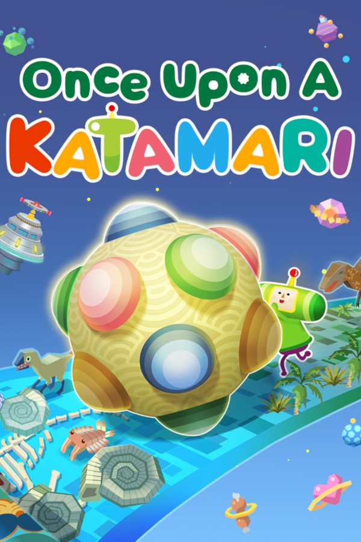

Once Upon a Katamari
Every archived year-end list appearance, including placement and points earned.
About the Game
Once Upon A KATAMARI - King of All Sounds Edition The King of All Sounds Edition includes: - Once Upon A KATAMARI - Katamari Damacy Series Songs: Side A - Katamari Damacy Series Songs: Side B About the Game Once upon a time a katamari rolled through both past and present. In this story across time, the adage endures: Let The Good Times Roll! Now onward through new worlds to roll up thy heart's desires and to restore the stars! • A Shiny New Katamari Damacy Adventure Awaits Experience new stages and a fabulous new soundtrack! Behold a fresh rolling experience, with never-before-seen support tools like the magnet to draw in nearby objects! How...attractive! • Roll Through the Ages The King was so well-behaved until he mistakenly crushed the Earth, the Moon, and numerous planets while fiddling with a peculiar scroll. Now roll your katamari through the Jurassic Era, Ice Age, historic Japan, and more eras to rebuild the sky's dazzling field of stars. • Keep the Family Close With Cousin Customization Play as The Prince, or choose among his 68 cousins and kin to play as. Customize their colors and faces to create as many original Cousin designs as there are stars in the sky. • Compete in Celestial 4-Player KatamariBall Conquer the game of KatamariBall, the galactic sport of choice across the Cosmos! Compete online against cousins around the world, or hone your skills with scintillating offline play against CPU opponents.
| Released | 2025-10-23 |
|---|---|
| Developer | RENGAME |
| Publisher | Bandai Namco Entertainment |
| Genres | Action, Adventure, Casual |
| Platforms | PC, Nintendo Switch, Xbox Series S/X, PlayStation 5 |
SingleplayerSteam AchievementsMultiplayerFull controller supportSteam CloudGreat SoundtrackStory RichControllerPvPCharacter CustomizationCute3D
Where to Buy
Game information provided by RAWG.
Points by Year
List History
| Year | Source | List | Placement | Points |
|---|---|---|---|---|
| 2025 | GameSpot | The Best Games Of 2025 | Unranked | 1 |
| 2025 | NPR | The best games of 2025, picked by NPR's staff | Unranked | 1 |